ゴールと画面の切り替え 〜タイトルからクリアまで〜
🎯 この章でできるようになること
- シーンを増やして、タイトル → ステージ → クリアの流れを作れる
- ゴールにさわったらクリア画面へ切り替えられる
- ゲームが最初に始まるシーンを設定できる
- 効果音とBGMをつけられる
※ 前回のプロジェクトが開けない・壊れてしまった人は、講師を呼んでね。
この章は、Stage1でPlayerが走れる状態なら始められます（敵やコインは後から追いつけばOK）。
5-1. ゲーム全体の流れを決めよう
今のゲームは、Stage1だけでできています。
ふつうのゲームには、タイトル画面があって、遊んで、クリア画面が出ますよね。
GDevelopでは、画面ごとにシーンを分けて作り、イベントでつなげます。
矢印1本1本が「シーンを変更する」のイベントになる
5-2. クリア画面（Clear）を作ろう
左上の「≡」でプロジェクトマネージャーを開き、「シーン」の右にある「＋」を押します。
「無名のシーン」が追加されて、名前を入力できる状態になるので、そのまま Clear と入力して Enter。
同じようにもう1つシーンを追加して、名前を Title にしておこう（5-3で使います）。
作ったシーンの名前をクリックすると、そのシーンが開きます。
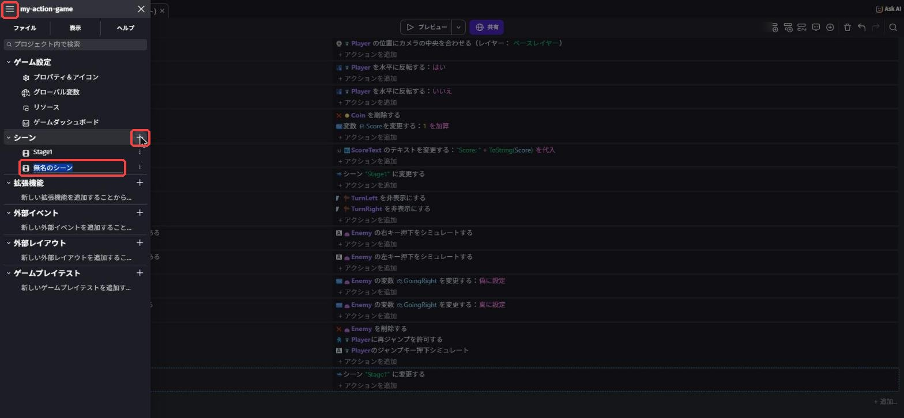
新しいシーンでは、新しくオブジェクトを作ります。
（どのシーンでも使いたいオブジェクトは「グローバルオブジェクト」にする方法もあるけど、この講座では使わなくてOK）
Clear シーンを開いて、オブジェクトパネルの「＋ オブジェクトを追加」→「オブジェクトの新規作成」で テキスト と検索し、「テキスト」で文字のオブジェクトを作ります（第3章のScoreTextと同じ手順）。
「ClearText を編集」の画面で、「オブジェクト名」を ClearText、「最初に表示するテキスト」を STAGE CLEAR! にしよう。
「サイズ」を 72 くらいにして「太字」にチェックを入れると、お祝いっぽく目立つよ。
最後に右下の「適用」を押します。
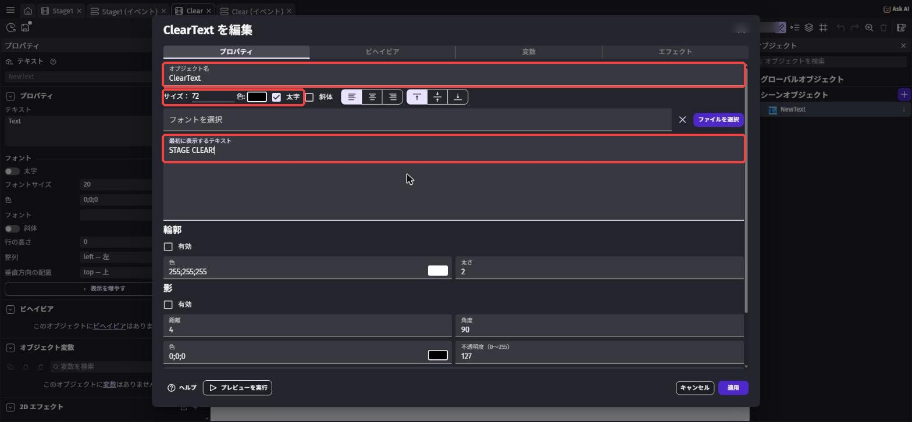
同じようにもう1つテキストのオブジェクトを作って名前を GuideText にし、文字を Press ENTER にします。
2つの文字を画面の真ん中あたりに置こう（「⋮」→「シーンにインスタンスを追加」で置いて、X・Y で位置を直すとかんたん）。
背景色（何もない場所を右クリック →「シーンプロパティを開く」の「シーンの背景色」）も変えるとそれっぽくなるよ。
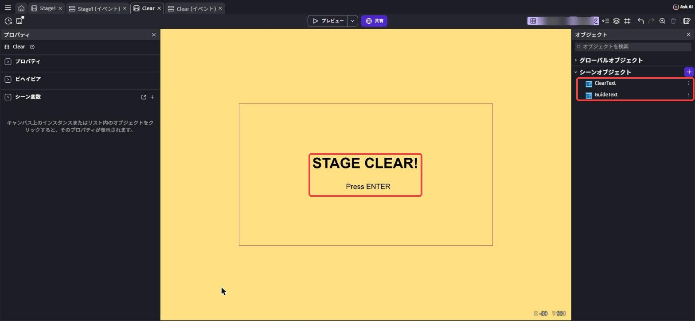
Clear シーンのイベントシート（Clear (イベント)）を開きます。
「条件を追加」で キーが押された と検索し、「キーが押された」（入力 › キーボード）を選びます。
すぐ下にある「キーを押している」とまちがえないようにしよう。
「チェックするキー」に Return と打つと候補が出るので、Return を選ぼう（GDevelopでは Enter キーは Return という名前です）。
アクションは シーンを変更 と検索して「シーンを変更する」を選び、「新しいシーンの名前」を Title にします。
"Return" キーが押された"Title" に変更する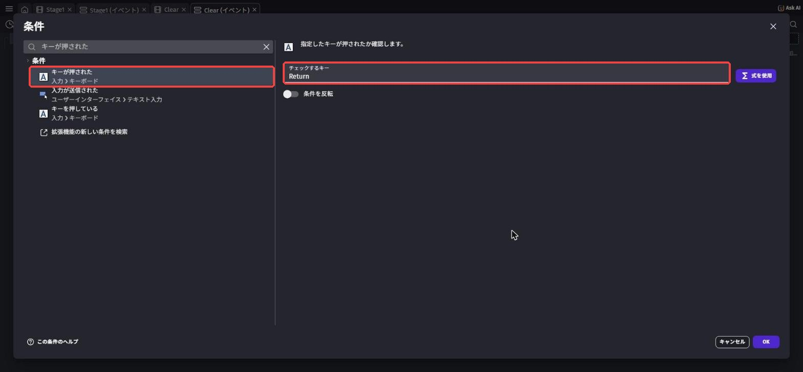
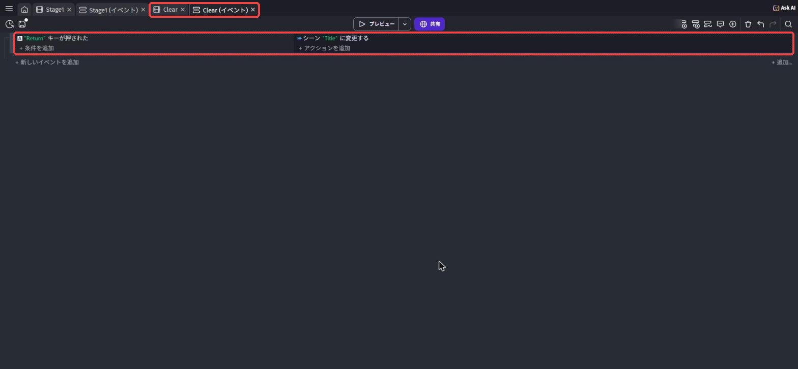
5-3. タイトル画面（Title）を作ろう
5-2で作った Title シーンを開きます。
テキストのオブジェクトで、ゲームの名前（TitleText）と、Press SPACE と書いた案内（StartText）を置こう。
ゲームの名前は、自分のゲームにぴったりのタイトルを考えてつけてね。
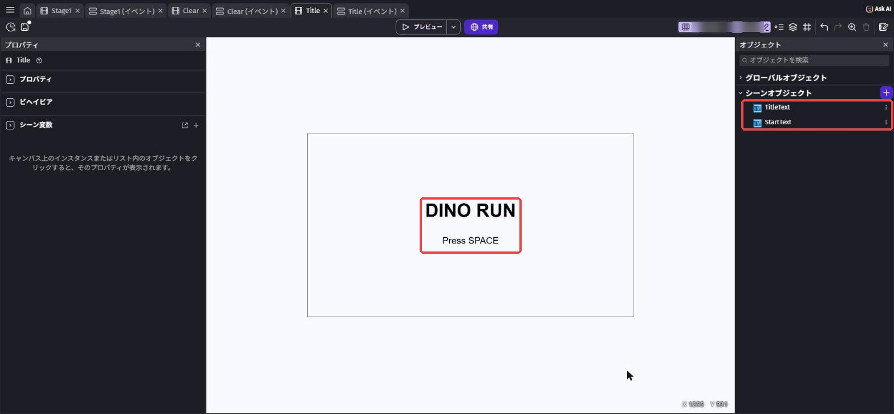
Title のイベントシート（Title (イベント)）で、条件「キーが押された: Space」、アクション「シーンを変更する: Stage1」を作ります。
"Space" キーが押された"Stage1" に変更する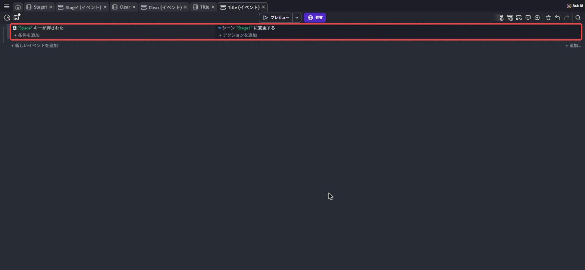
🚨 なぜタイトルはSpace、クリアはEnterなの？
もし両方ともSpaceにすると、クリア画面でSpaceを押した瞬間にタイトルへ行き、まだSpaceが押されたままなので、タイトルもすぐ飛ばされてStage1が始まってしまいます。
キーを分けておけば、この「連続で飛ばされる」問題が起きません。
条件に「キーを押している」（押されている間ずっと）ではなく「キーが押された」（押された瞬間だけ）を使っているのも、同じ問題を防ぐためです。
プロジェクトマネージャー（≡）で Title を右クリックして、「スタートシーンとして設定」（最初に始まるシーンにする）を選びます。
Title の右に旗のマークがついたら成功。
これで、ゲームを起動したときにタイトル画面から始まるようになります。
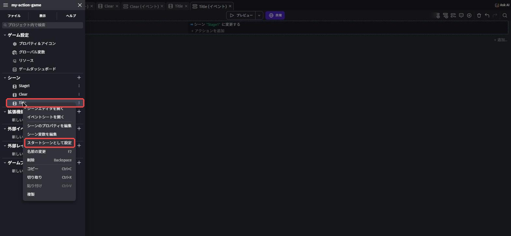
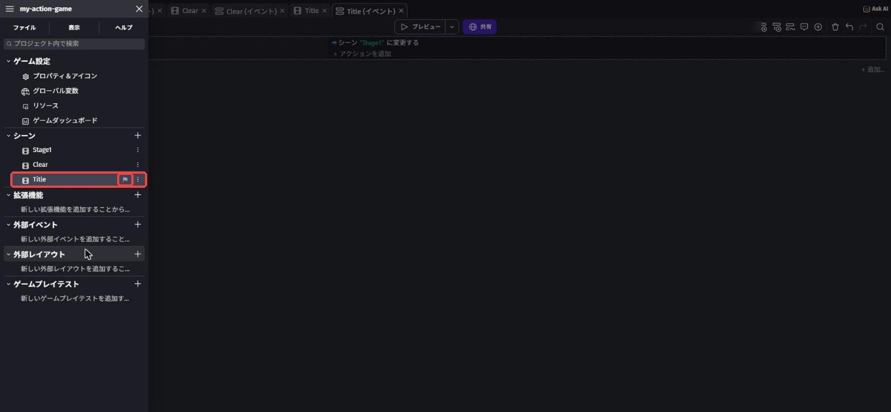
これがスタートシーンの印
5-4. ゴール（Goal）を作ろう
Stage1 シーンに戻り、アセットストアで flag や door と検索。
素材の名前は英語なので、検索も英語でOK。
ゴールらしい素材を「シーンに追加」して名前を Goal にし、ステージのいちばん奥に置こう。
この教科書では「Flag Green」（ライセンスはCC0）を使い、X 2500、Y 550（地面の上）に置いています。
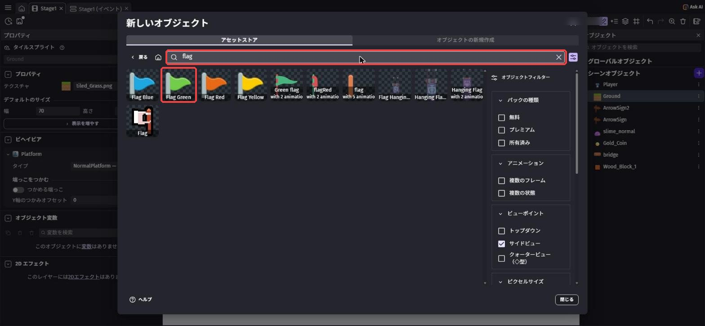
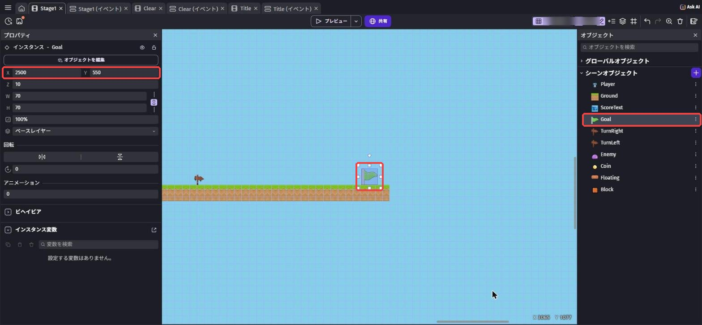
Stage1 のイベントシートに、条件「衝突: Player と Goal」、アクション「シーンを変更する: Clear」のイベントを追加します。
Player は Goal と衝突している"Clear" に変更する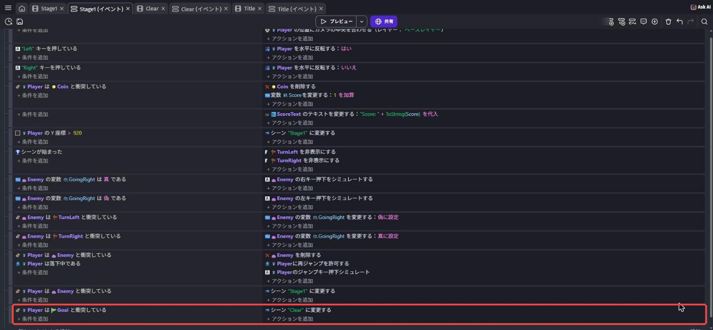
Title シーン（または Title (イベント)）のタブを開いた状態で「プレビュー」を押します。
タイトル → Spaceでステージ → ゴール → クリア画面 → Enterでタイトル、と一周できれば大成功！
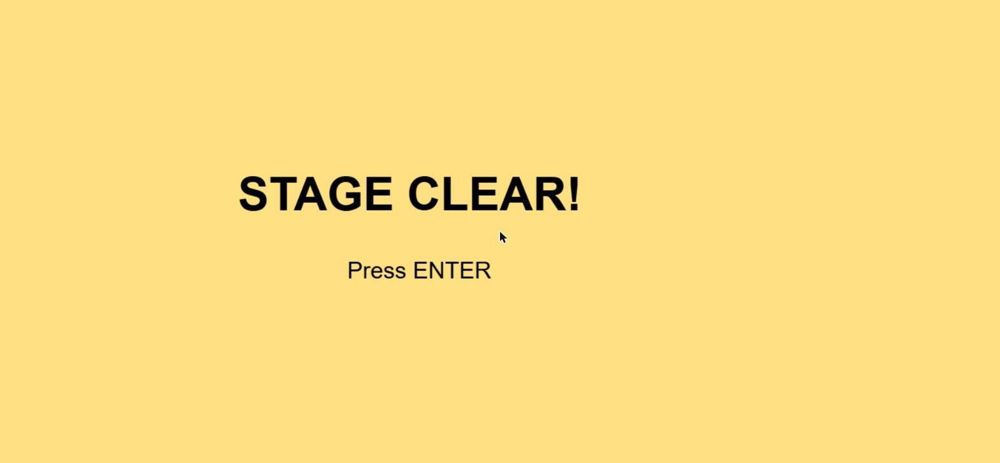
ゲーム全体を最初から通して試したいときは、Title シーンを開いてからプレビューしよう。
「プレビュー」ボタンの右の「▾」→「プレビューはすべて、このシーンから開始する」を選ぶと、どのシーンを開いていても今のシーンから始まるように固定することもできます。
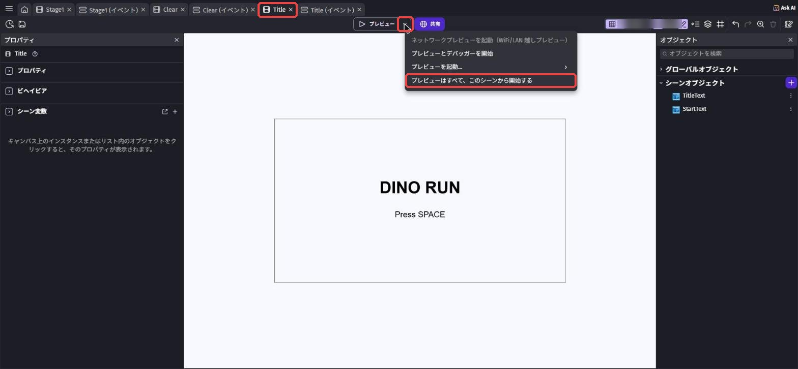
5-5. 効果音とBGMをつけよう
音があるだけで、ゲームは一気に「本物っぽく」なります。
コインを取ったときの「チャリン」、敵を踏んだときの「ポコッ」など、短い音を効果音、ずっと流れている音楽をBGMと呼びます。
🚨 音の素材のルール
使っていいのは、GDevelopのアセットストアの無料素材や、自分で作った音だけ。
好きなアニメやゲームの曲、動画サイトの音をダウンロードして使うのは、作った人の権利（著作権）をおかすことになるのでNGです。
作品を発表したり公開したりするときに問題になるので、最初から守っておこう。
Stage1 のイベントシートで、第3章で作った「コインを取る」イベントの右側の「アクションを追加」を押します。
サウンドを再生 と検索して「サウンドを再生する」（オーディオ › サウンドと音楽）を選びます。
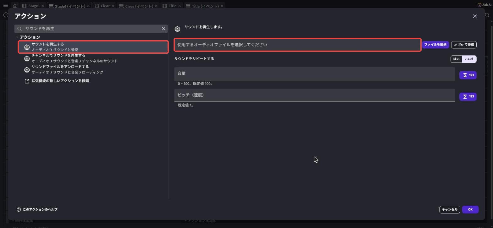
右に「使用するオーディオファイルを選択してください」の欄が出る
「使用するオーディオファイルを選択してください」の欄をクリックすると、音の選び方が出てきます。
「アセットストアから選択」を選ぼう。
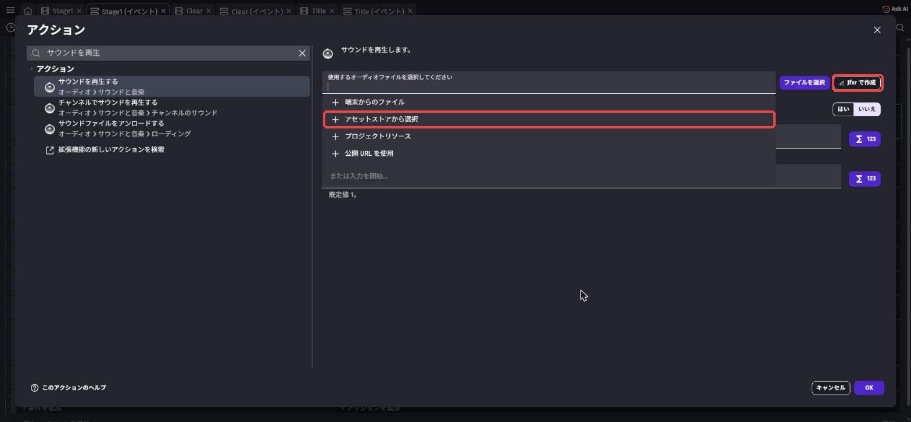
「アセットストアから選択」を選ぶ（右上の「Jfxr で作成」は効果音を自分で作るボタン）
「新しいリソース」の画面が開くので、検索欄に coin と入れて探そう（音の名前は英語なので、英語で検索します）。
▷ボタンで試し聞きができます。
「チャリン」っぽい音（この教科書では「Coins 1」）を選んで、右下の「プロジェクトに追加」を押します。
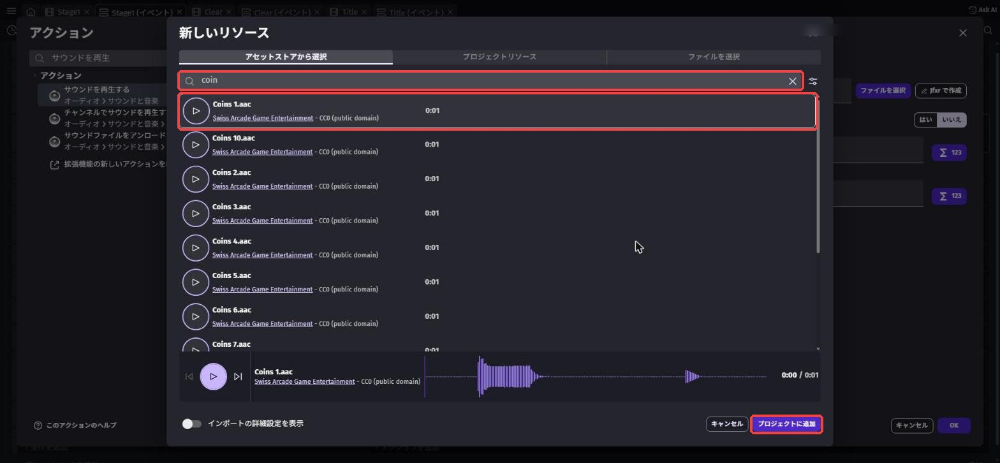
「サウンドをリピートする」は「いいえ」、「音量」は空のまま（100になる）でOK。
最後に「OK」を押します。
音を選ぶ前の画面で、ファイル欄の右の「Jfxr で作成」を押すと、効果音を自分で作ることもできるよ。
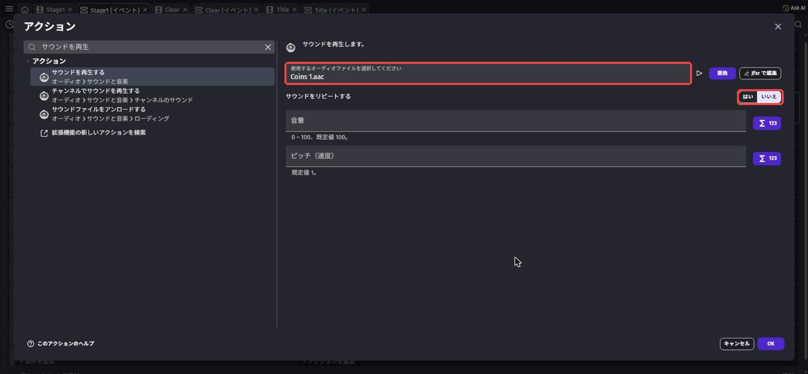
サウンドをリピートするは「いいえ」
Stage1 のイベントシートで、「シーンが始まった」のイベント（第4章で目印をかくしたイベント）の右側の「アクションを追加」を押します。
音楽ファイルを再生 と検索して、音楽を流すアクション「音楽ファイルを再生する」を選びます。
効果音と同じように「アセットストアから選択」で music loop などと検索し、BGMにしたい曲を「プロジェクトに追加」。
「サウンドをリピートする」（くり返す）を はい にして「OK」。
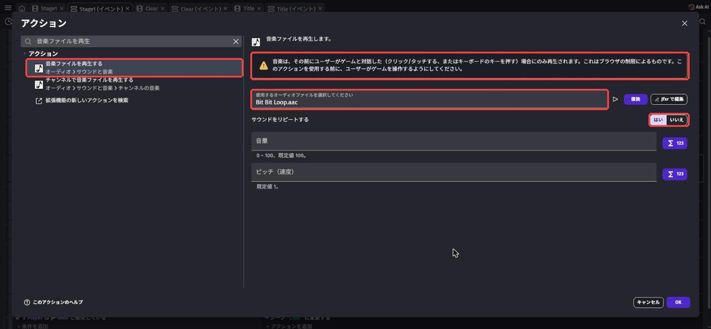
上の注意書きは音楽が鳴る条件の説明
アクションの画面の注意書き（「音楽は、その前にユーザーがゲームと対話した…場合にのみ再生されます」）にも、そう書いてあります。
タイトル画面でSpaceを押してからStage1が始まるようにしておけば、Stage1のBGMはちゃんと鳴ります。
TurnLeft を非表示にするTurnRight を非表示にするBit Bit Loop.aac の音楽を再生する、音量: 100, ループ: はい
Player は Coin と衝突しているCoin を削除する変数
Score を変更する：1 を加算Coins 1.aac のサウンドを再生する、音量: 100, ループ: いいえ
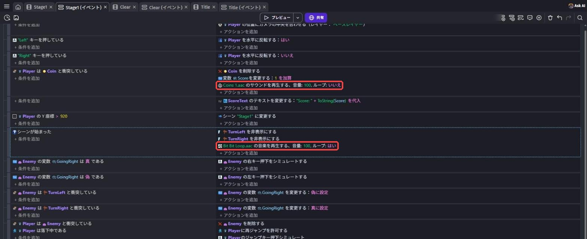
Title シーンを開いて「プレビュー」。
音が鳴るか、一周できるかを確かめて、Ctrl + S⌘ + S で保存しよう。
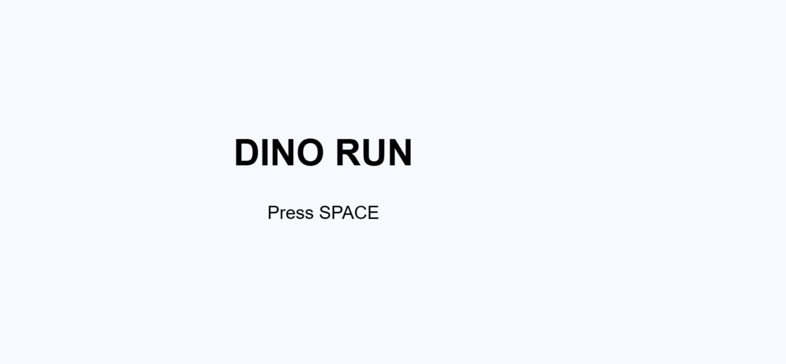
5-6. 💪 やってみよう
課題1: 踏んだ音・ゴールの音をつけよう
敵を踏んだとき（第4章のイベントE）と、ゴールにさわったときにも、それぞれ別の効果音を鳴らそう。
ヒントを見る
どちらも、すでにあるイベントの右側に「サウンドを再生する」を足すだけ。
ゴールの音は、シーンが切り替わると途中で止まることがあります。
クリア画面の「シーンが始まった」で鳴らす方法もためしてみよう。
課題2: タイトル画面をにぎやかにしよう
タイトル画面に、キャラや背景の絵を置いて、ゲームの世界観が伝わる画面にしよう。
「このゲーム、遊んでみたい！」と思ってもらえたら合格。
ヒントを見る
Title シーンでも「＋ オブジェクトを追加」からアセットストアの絵が使えるよ。
Stage1で使ったのと同じキャラの素材を、もう一度追加してもOK。
課題3（チャレンジ）: クリア画面にスコアを出そう
クリア画面に「Score: 12」のように、Stage1で取ったスコアを表示しよう。
ヒントを見る
シーン変数はシーンが変わると消えてしまいます。
シーンをまたいで使いたい数は「グローバル変数」（ゲーム全体の箱）に入れよう。
プロジェクトマネージャーの「グローバル変数」から作れます。
Stage1 のコインのイベントでグローバル変数を増やし、Clear シーンでその数を表示すればOK。
Title で Space を押したときにグローバル変数を 0 に戻すのも忘れずに。
5-7. 🚨 つまずきポイント集
プレビューすると、タイトルではなくStage1から始まる
原因: プレビューは「今開いているシーン」から始まる。
直し方: Title シーンのタブを開いてからプレビューしよう。
「スタートシーンとして設定」が正しくできているか（Title に旗のマークがついているか）も確認してね。
ゴールにさわってもクリア画面にならない
原因: 「シーンを変更する」のシーン名がまちがっている（clear と小文字にしている、スペースが入っている など）。
直し方: プロジェクトマネージャーのシーン名と、イベントのシーン名が1文字残らず同じか確認しよう。
タイトル画面が一瞬で飛ばされる
原因: クリア画面とタイトル画面で、同じキーを使っている。
直し方: 5-3の「なぜタイトルはSpace、クリアはEnterなの？」を読んで、キーを分けよう。
音が鳴らない
原因1: PCやブラウザのタブの音量がミュートになっている。
→ 音量とタブのミュートを確認しよう。
原因2: ブラウザは、ページで一度もキーやクリックをしていないと音を鳴らさないことがある。
→ ゲーム画面を一度クリックしたり、タイトルでキーを押したりしたあとなら鳴るはず。
タイトル画面を作ったのは、このためでもあるよ。
Clear シーンのオブジェクト一覧に Player がいない
原因: オブジェクトはシーンごとに別々。
直し方: 新しいシーンでは、使う素材をもう一度追加しよう。
5-2の「オブジェクトはシーンごと」を読んでね。
💡 15分たっても直らないときは、次の「AIを味方につけよう」の方法で相談してみよう。
5-8. 🤖 AIを味方につけよう
シーンが増えてきたら、相談するときは「どのシーンの」イベントなのかも書き添えよう。
この章でのAIの使い所
✅ 良い使い方 — 自分で15分考えてわからなかったら聞く
- ゲームの流れの相談: 「タイトル → ステージ → クリア」のつなぎ方で迷ったら、シーンとイベントを書き出して確認してもらう
- 演出のアイデア出し: 「クリア画面を盛り上げる方法」のアイデアを聞いて、自分で選んで作る
そのままコピペで使えるプロンプト（AIへの指示文）の例:
シーンは Title、Stage1、Clear の3つです。
Stage1 のイベントに「条件: Player は Goal と衝突している → アクション: シーン "Clear" に変更する」を作りましたが、ゴールにさわってもクリア画面になりません。
確認するべきことを順番に教えてください。
GDevelopで中学生でも作れそうなアイデアを5つ、むずかしさの低い順に教えてください。
作り方は自分で調べるので、アイデアだけでOKです。
🚫 やめておこう
- ゲームのタイトル（名前）をAIに決めてもらう（自分の作品の名前は、自分でつけよう！）
- AIに「〇〇の曲を使っていい？」と聞いて、OKと言われたからと使う（著作権はAIの判断ではなく、素材のライセンスで確認する）
- AIの答えを試して確かめずに信じる（AIは古いGDevelopの画面の話をすることもある。
必ず自分の画面で確認）
5-9. ✅ チェックリスト
全部チェックできたら第5章クリア！
🎉 これで「1本のゲーム」としてつながりました。
次回はいよいよ最終回。
自由にカスタマイズして自分だけの作品に仕上げ、みんなの前で発表するよ。
5-10. 📚 もっと知りたい人へ
- GDevelop公式Wiki（英語） — 「Scenes」「Audio」のページで、シーンと音の公式説明が読める
- 変数の解説（公式Wiki） — 課題3のグローバル変数を使うときの参考に